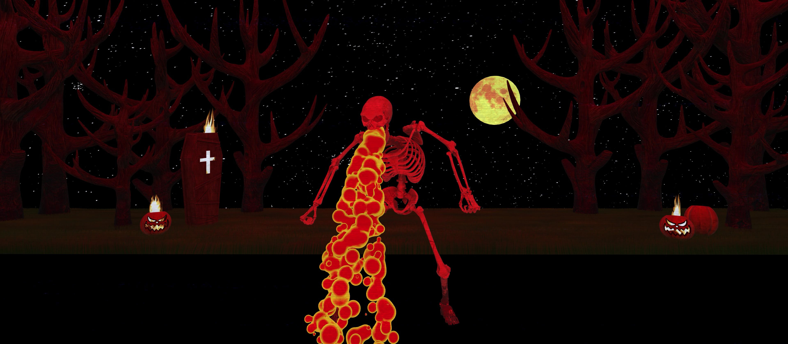
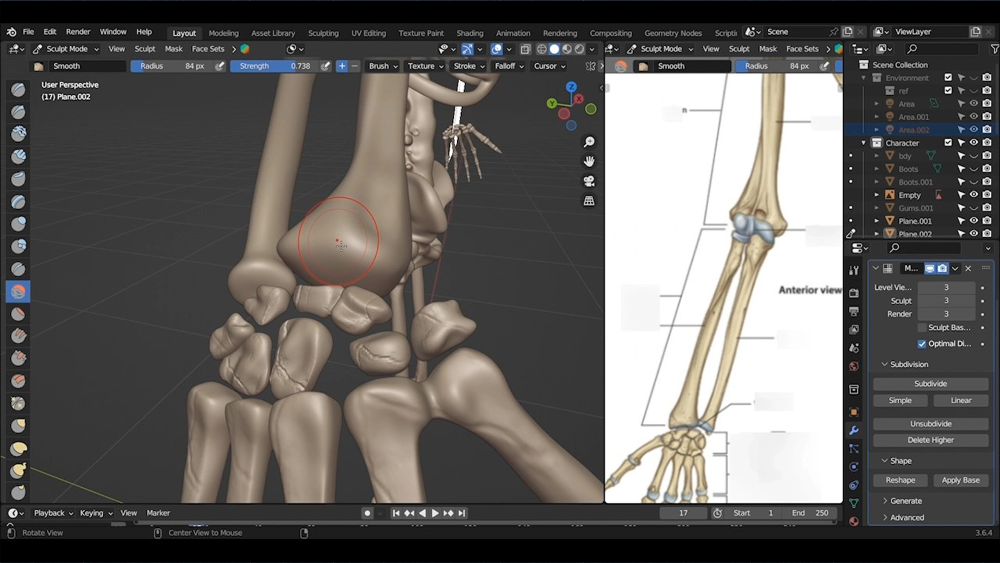
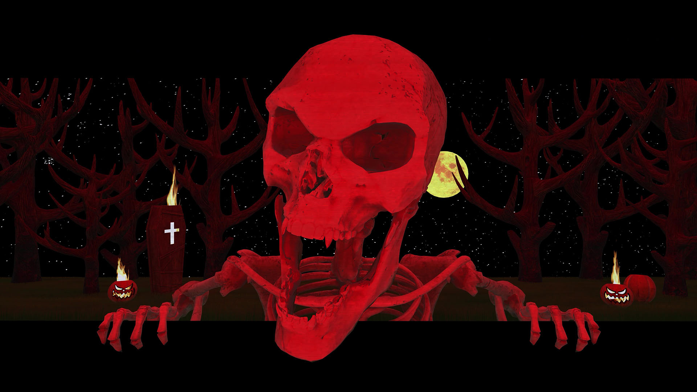
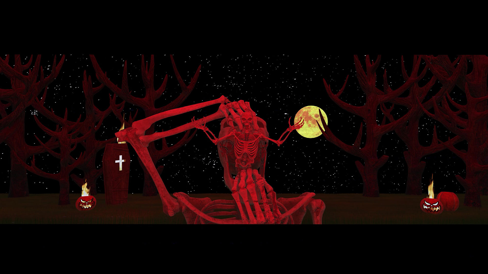

Skeleton Animation

ABOUT THE PROJECT
Recreation of the Shrek visual used by Excision. I modeled the skeleton and animated in keyframes which was a great experience in exploring various interpolation methods.


